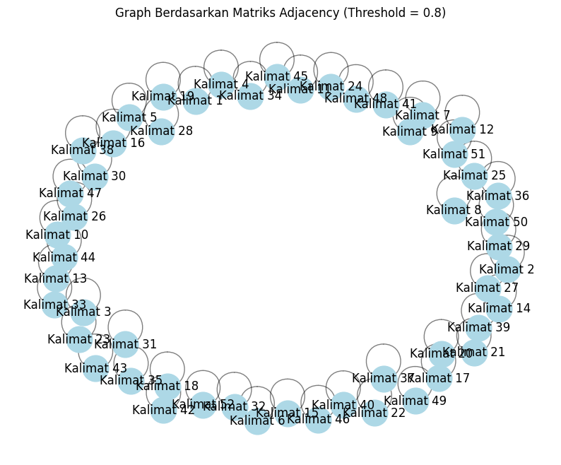

from google.colab import drive
drive.mount('/content/drive')
---------------------------------------------------------------------------
KeyboardInterrupt Traceback (most recent call last)
<ipython-input-1-d5df0069828e> in <cell line: 2>()
1 from google.colab import drive
----> 2 drive.mount('/content/drive')
/usr/local/lib/python3.10/dist-packages/google/colab/drive.py in mount(mountpoint, force_remount, timeout_ms, readonly)
98 def mount(mountpoint, force_remount=False, timeout_ms=120000, readonly=False):
99 """Mount your Google Drive at the specified mountpoint path."""
--> 100 return _mount(
101 mountpoint,
102 force_remount=force_remount,
/usr/local/lib/python3.10/dist-packages/google/colab/drive.py in _mount(mountpoint, force_remount, timeout_ms, ephemeral, readonly)
135 )
136 if ephemeral:
--> 137 _message.blocking_request(
138 'request_auth',
139 request={'authType': 'dfs_ephemeral'},
/usr/local/lib/python3.10/dist-packages/google/colab/_message.py in blocking_request(request_type, request, timeout_sec, parent)
174 request_type, request, parent=parent, expect_reply=True
175 )
--> 176 return read_reply_from_input(request_id, timeout_sec)
/usr/local/lib/python3.10/dist-packages/google/colab/_message.py in read_reply_from_input(message_id, timeout_sec)
94 reply = _read_next_input_message()
95 if reply == _NOT_READY or not isinstance(reply, dict):
---> 96 time.sleep(0.025)
97 continue
98 if (
KeyboardInterrupt:
cd /content/drive/MyDrive/PPW/tugas
/content/drive/MyDrive/PPW/tugas
!pip install Sastrawi
Requirement already satisfied: Sastrawi in /usr/local/lib/python3.10/dist-packages (1.0.1)
!pip install networkx matplotlib
Requirement already satisfied: networkx in /usr/local/lib/python3.10/dist-packages (3.3)
Requirement already satisfied: matplotlib in /usr/local/lib/python3.10/dist-packages (3.7.1)
Requirement already satisfied: contourpy>=1.0.1 in /usr/local/lib/python3.10/dist-packages (from matplotlib) (1.3.0)
Requirement already satisfied: cycler>=0.10 in /usr/local/lib/python3.10/dist-packages (from matplotlib) (0.12.1)
Requirement already satisfied: fonttools>=4.22.0 in /usr/local/lib/python3.10/dist-packages (from matplotlib) (4.54.1)
Requirement already satisfied: kiwisolver>=1.0.1 in /usr/local/lib/python3.10/dist-packages (from matplotlib) (1.4.7)
Requirement already satisfied: numpy>=1.20 in /usr/local/lib/python3.10/dist-packages (from matplotlib) (1.26.4)
Requirement already satisfied: packaging>=20.0 in /usr/local/lib/python3.10/dist-packages (from matplotlib) (24.1)
Requirement already satisfied: pillow>=6.2.0 in /usr/local/lib/python3.10/dist-packages (from matplotlib) (10.4.0)
Requirement already satisfied: pyparsing>=2.3.1 in /usr/local/lib/python3.10/dist-packages (from matplotlib) (3.1.4)
Requirement already satisfied: python-dateutil>=2.7 in /usr/local/lib/python3.10/dist-packages (from matplotlib) (2.8.2)
Requirement already satisfied: six>=1.5 in /usr/local/lib/python3.10/dist-packages (from python-dateutil>=2.7->matplotlib) (1.16.0)
import pandas as pd
import numpy as np
import re
import nltk
from nltk.corpus import stopwords
#stemming
from Sastrawi.Stemmer.StemmerFactory import StemmerFactory
from sklearn.feature_extraction.text import TfidfVectorizer
from sklearn.metrics.pairwise import cosine_similarity
import nltk
from nltk.tokenize import sent_tokenize
import networkx as nx
import matplotlib.pyplot as plt
# # Path ke file di Google Drive (ubah sesuai lokasimu)
# # file_path = '/content/drive/MyDrive/PPW/tugas/satu-berita.csv'
# file_path = '/content/drive/MyDrive/PPW/tugas/Tugas-Crawling-Data-Berita-2-kategori.csv'
# # Baca file CSV
# df = pd.read_csv(file_path)
# # Tambahkan tag <eos> sebagai pelabelan akhir kalimat
# def add_eos_tag(text):
# return re.sub(r'\.\s+', ' <eos> ', text) # Ganti titik (.) dengan <eos>
# df[['Judul Berita', 'Isi Berita', 'Tanggal Berita', 'Kategori Berita']].iloc[1]
# # Terapkan pelabelan akhir kalimat
# df_eos = df['Isi Berita EOS'] = df['Isi Berita'].apply(add_eos_tag)
# Path ke file di Google Drive (ubah sesuai lokasimu)
file_path = '/content/drive/MyDrive/PPW/tugas/Tugas-Crawling-Data-Berita-2-kategori.csv'
# Baca file CSV
df = pd.read_csv(file_path)
# Tambahkan tag <eos> sebagai pelabelan akhir kalimat
def add_eos_tag(text):
return re.sub(r'\.\s+', ' <eos> ', text) # Ganti titik (.) dengan <eos>
# Terapkan pelabelan akhir kalimat
df['Isi Berita EOS'] = df['Isi Berita'].apply(add_eos_tag)
# Tampilkan hasil setelah pelabelan EOS
df[['Isi Berita', 'Isi Berita EOS']]
| Isi Berita | Isi Berita EOS | |
|---|---|---|
| 0 | TIMESINDONESIA, JAKARTA – Di bawah kepemimpina... | TIMESINDONESIA, JAKARTA – Di bawah kepemimpina... |
| 1 | TIMESINDONESIA, MALANG – Bakal cawabup Malang,... | TIMESINDONESIA, MALANG – Bakal cawabup Malang,... |
| 2 | TIMESINDONESIA, BANTUL – Rois Syuriah PCNU Ban... | TIMESINDONESIA, BANTUL – Rois Syuriah PCNU Ban... |
| 3 | TIMESINDONESIA, MOJOKERTO – Ribuan kader PKB K... | TIMESINDONESIA, MOJOKERTO – Ribuan kader PKB K... |
| 4 | TIMESINDONESIA, JAKARTA – Partai Kebangkitan B... | TIMESINDONESIA, JAKARTA – Partai Kebangkitan B... |
| ... | ... | ... |
| 95 | TIMESINDONESIA, MALANG – Azquira Scarf menggel... | TIMESINDONESIA, MALANG – Azquira Scarf menggel... |
| 96 | TIMESINDONESIA, MALANG – Pada Minggu (1/9/2024... | TIMESINDONESIA, MALANG – Pada Minggu (1/9/2024... |
| 97 | TIMESINDONESIA, SURABAYA – Memilih wewangian p... | TIMESINDONESIA, SURABAYA – Memilih wewangian p... |
| 98 | TIMESINDONESIA, MAGELANG – Anda ingin mencicip... | TIMESINDONESIA, MAGELANG – Anda ingin mencicip... |
| 99 | TIMESINDONESIA, JAKARTA – Tauco adalah salah s... | TIMESINDONESIA, JAKARTA – Tauco adalah salah s... |
100 rows × 2 columns
# Path ke file di Google Drive (ubah sesuai lokasimu)
file_path = '/content/drive/MyDrive/PPW/tugas/Tugas-Crawling-Data-Berita-2-kategori.csv'
# Baca file CSV
df = pd.read_csv(file_path)
# Tambahkan tag <eos> sebagai pelabelan akhir kalimat
def add_eos_tag(text):
return re.sub(r'\.\s+', ' <eos> ', text) # Ganti titik (.) dengan <eos>
# Terapkan pelabelan akhir kalimat
df['Isi Berita EOS'] = df['Isi Berita'].apply(add_eos_tag)
# Tampilkan satu berita dari DataFrame (misalnya berita pertama)
berita_index = 90 # Ganti dengan indeks berita
berita_display = df[['Judul Berita', 'Isi Berita', 'Tanggal Berita', 'Kategori Berita', 'Isi Berita EOS']].iloc[[berita_index]]
# Tampilkan DataFrame
display(berita_display)
| Judul Berita | Isi Berita | Tanggal Berita | Kategori Berita | Isi Berita EOS | |
|---|---|---|---|---|---|
| 90 | Berkeliling Nusantara Melalui Suguhan Kuliner ... | TIMESINDONESIA, MAGELANG – Anda ingin mencicip... | 04/09/2024 - 17:00 | Gaya Hidup | TIMESINDONESIA, MAGELANG – Anda ingin mencicip... |
def remove_url(data_berita):
url = re.compile(r'https?://\S+|www\.\S+')
return url.sub(r'', data_berita)
def remove_html(data_berita):
html = re.compile(r'<(?!eos).*?>') # Pertahankan <eos>
return html.sub(r'', data_berita)
def remove_emoji(data_berita):
emoji_pattern = re.compile("["
u"\U0001F600-\U0001F64F"
u"\U0001F300-\U0001F5FF"
u"\U0001F680-\U0001F6FF"
u"\U0001F1E0-\U0001F1FF"
"]+", flags=re.UNICODE)
return emoji_pattern.sub(r'', data_berita)
def remove_numbers(data_berita):
return re.sub(r'\d+', '', data_berita)
def remove_symbols_except_eos(data_berita):
# Pertahankan <eos> tapi hapus simbol lainnya
return re.sub(r'[^a-zA-Z0-9\s<eos>]', '', data_berita)
# Terapkan cleansing sambil mempertahankan tag <eos>
df['Isi Berita Clean'] = df['Isi Berita EOS'].apply(remove_url)
df['Isi Berita Clean'] = df['Isi Berita Clean'].apply(remove_html)
df['Isi Berita Clean'] = df['Isi Berita Clean'].apply(remove_emoji)
df['Isi Berita Clean'] = df['Isi Berita Clean'].apply(remove_symbols_except_eos)
df['Isi Berita Clean'] = df['Isi Berita Clean'].apply(remove_numbers)
berita_clean = df[['Isi Berita EOS', 'Isi Berita Clean']].iloc[[berita_index]]
# Tampilkan DataFrame
display(berita_clean)
| Isi Berita EOS | Isi Berita Clean | |
|---|---|---|
| 90 | TIMESINDONESIA, MAGELANG – Anda ingin mencicip... | TIMESINDONESIA MAGELANG Anda ingin mencicipi ... |
def case_folding(text):
return text.lower()
df['case folding'] = df['Isi Berita Clean'].apply(case_folding)
# Tampilkan hasil setelah case folding
# df[['Isi Berita Clean', 'case folding']]
berita_CF = df[['Isi Berita EOS', 'Isi Berita Clean', 'case folding']].iloc[[berita_index]]
# Tampilkan DataFrame
display(berita_CF)
| Isi Berita EOS | Isi Berita Clean | case folding | |
|---|---|---|---|
| 90 | TIMESINDONESIA, MAGELANG – Anda ingin mencicip... | TIMESINDONESIA MAGELANG Anda ingin mencicipi ... | timesindonesia magelang anda ingin mencicipi ... |
def tokenize(text):
tokens = text.split()
return tokens
df['tokenize'] = df['case folding'].apply(tokenize)
# Tampilkan hasil setelah tokenisasi
# df[['case folding', 'tokenize']]
berita_tkn = df[['Isi Berita EOS', 'Isi Berita Clean', 'case folding', 'tokenize']].iloc[[berita_index]]
# Tampilkan DataFrame
display(berita_tkn)
| Isi Berita EOS | Isi Berita Clean | case folding | tokenize | |
|---|---|---|---|---|
| 90 | TIMESINDONESIA, MAGELANG – Anda ingin mencicip... | TIMESINDONESIA MAGELANG Anda ingin mencicipi ... | timesindonesia magelang anda ingin mencicipi ... | [timesindonesia, magelang, anda, ingin, mencic... |
nltk.download('stopwords')
stop_words = stopwords.words('indonesian')
[nltk_data] Downloading package stopwords to /root/nltk_data...
[nltk_data] Package stopwords is already up-to-date!
def remove_stopwords(text):
return [word for word in text if word not in stop_words]
df['stopword removal'] = df['tokenize'].apply(remove_stopwords)
# Tampilkan hasil setelah stopword removal
# df[['tokenize', 'stopword removal']]
berita_SR = df[['Isi Berita EOS', 'Isi Berita Clean', 'case folding', 'tokenize', 'stopword removal']].iloc[[berita_index]]
# Tampilkan DataFrame
display(berita_SR)
| Isi Berita EOS | Isi Berita Clean | case folding | tokenize | stopword removal | |
|---|---|---|---|---|---|
| 90 | TIMESINDONESIA, MAGELANG – Anda ingin mencicip... | TIMESINDONESIA MAGELANG Anda ingin mencicipi ... | timesindonesia magelang anda ingin mencicipi ... | [timesindonesia, magelang, anda, ingin, mencic... | [timesindonesia, magelang, mencicipi, kenikmat... |
factory = StemmerFactory()
stemmer = factory.create_stemmer()
def stemming(text):
return [stemmer.stem(word) for word in text]
df['stemming'] = df['stopword removal'].apply(stemming)
# Tampilkan hasil setelah stemming
# df[['stopword removal', 'stemming']]
berita_stem = df[['Isi Berita EOS', 'Isi Berita Clean', 'case folding', 'tokenize', 'stopword removal', 'stemming']].iloc[[berita_index]]
# Tampilkan DataFrame
display(berita_stem)
| Isi Berita EOS | Isi Berita Clean | case folding | tokenize | stopword removal | stemming | |
|---|---|---|---|---|---|---|
| 90 | TIMESINDONESIA, MAGELANG – Anda ingin mencicip... | TIMESINDONESIA MAGELANG Anda ingin mencicipi ... | timesindonesia magelang anda ingin mencicipi ... | [timesindonesia, magelang, anda, ingin, mencic... | [timesindonesia, magelang, mencicipi, kenikmat... | [timesindonesia, magelang, cicip, nikmat, dere... |
def split_sentences(text):
return text.split(' eos ')
df['kalimat_terpecah'] = df['stemming'].apply(lambda x: ' '.join(x)).apply(split_sentences)
# Atau dalam bentuk tabel (jika menggunakan pandas)
df_kalimat = pd.DataFrame({
'no': list(range(1, len(df['kalimat_terpecah'][0]) + 1)),
'kalimat': df['kalimat_terpecah'][0]
})
df_kalimat
| no | kalimat | |
|---|---|---|
| 0 | 1 | timesindonesia jakarta pimpin presiden ri prab... |
| 1 | 2 | fokus mandiri pangan energi kuat ekonomi tega ... |
| 2 | 3 | prabowo harap bawa indonesia era kuat regional... |
| 3 | 4 | dapat kait prospek perintah prabowo rabu muhli... |
| 4 | 5 | lantik presiden republik indonesia oktober pra... |
| 5 | 6 | oktober prabowo media darling simbol harap rakyat |
| 6 | 7 | nama harum popularitas alami lonjak perintah k... |
| 7 | 8 | bangun demokrasi sehat muhlis nilai prabowo mi... |
| 8 | 9 | bagai sempat prabowo demokrasi sehat kelola ku... |
| 9 | 10 | apresiasi ungkap prabowo sebut haus kuasa gang... |
| 10 | 11 | prabowo acu pandang demokrasi modern kuasa tan... |
| 11 | 12 | salah agenda perintah prabowo profesionalisme ... |
| 12 | 13 | acara tutup kongres pan prabowo tekan intelije... |
| 13 | 14 | pakai alatalat caracara duludulu |
| 14 | 15 | adu domba ngintelngintelin orang |
| 15 | 16 | intel tuh rakyat bangsa ngintelin lawan politi... |
| 16 | 17 | muhlis ali sebut nyata angin segar demokrasi i... |
| 17 | 18 | mantan ketua pb hmi tekan bebas ekspres bebas ... |
| 18 | 19 | era pimpin prabowo kriminalisasi oposisi pers ... |
| 19 | 20 | perintah suara kritis ruang bungkam beda pandang |
| 20 | 21 | turut jaga bebas kunci bangun perintah buka tr... |
| 21 | 22 | muhlis apresiasi upaya prabowo galang satu rek... |
| 22 | 23 | turut kuat ajak imbang fungsi oposisi |
| 23 | 24 | demokrasi oposisi jaga check and balance |
| 24 | 25 | oposisi objektif beda dasar |
| 25 | 26 | mandiri pangan energi konteks ekonomi prabowo ... |
| 26 | 27 | nyata prabowo sebut indonesia takut negara man... |
| 27 | 28 | salah langkah konkret ambil perintah selesai u... |
| 28 | 29 | langkah upaya nyata kurang gantung bahan bakar... |
| 29 | 30 | muhlis sorot berani prabowo hadap presiden pra... |
| 30 | 31 | terima kasih larang kelapa sawit masuk eropa |
| 31 | 32 | kelapa sawit penting rakyat swasembada energi ... |
| 32 | 33 | muhlis sikap patut apresiasi teguh prabowo tah... |
| 33 | 34 | transparansi supremasi hukum muhlis ali tekan ... |
| 34 | 35 | rakyat yakin perintah prabowo benarbenar penti... |
| 35 | 36 | prabowo jaga integritas perintah bersih bebas ... |
| 36 | 37 | supremasi hukum sorot utama |
| 37 | 38 | muhlis tega hukum adil sulit perintah bangun c... |
| 38 | 39 | prabowo hukum tegak pandang bulu kunci jaga pe... |
| 39 | 40 | muhlis ali menggarisbawahi komitmen prabowo be... |
| 40 | 41 | nyata prabowo sisih anggar khusus berantas kor... |
| 41 | 42 | indonesia macan asia muhlis ali percaya alam l... |
| 42 | 43 | wujud visi muhlis kabinet solid orientasi ting... |
| 43 | 44 | dukung usaha mikro tengah umkm kuat akses muda... |
| 44 | 45 | kelola bijak fiskal efektif kurang pajak beri ... |
| 45 | 46 | dinamika global prabowo demokrasi indonesia mi... |
| 46 | 47 | prabowo demokrasi ala barat demokrasi indonesi... |
| 47 | 48 | muhlis nilai pandang relevan standar ganda ter... |
| 48 | 49 | periode tentu indonesia |
| 49 | 50 | muhlis ali poros pemuda indonesia awal dukung ... |
| 50 | 51 | momen lompat maju |
| 51 | 52 | ppi awal dukung konstruktif perintah prabowo m... |
# Data kalimat terpecah, hasil dari proses sebelumnya
df_kalimat = pd.DataFrame({
'no': list(range(1, len(df['kalimat_terpecah'][0]) + 1)),
'kalimat': df['kalimat_terpecah'][0]
})
# 1. Menggabungkan kalimat menjadi satu string per dokumen
# Jika sudah ada dataframe df_kalimat berisi kalimat-kalimat, kita bisa ambil kolom kalimat
dokumen = df_kalimat['kalimat'].tolist() # Mengambil kalimat-kalimat sebagai list
# 2. Inisialisasi TfidfVectorizer
vectorizer = TfidfVectorizer()
# 3. Transformasikan kalimat ke dalam representasi TF-IDF
tfidf_matrix = vectorizer.fit_transform(dokumen)
# 4. Konversi hasilnya ke dalam DataFrame untuk visualisasi yang lebih mudah
tfidf_df = pd.DataFrame(tfidf_matrix.toarray(), columns=vectorizer.get_feature_names_out())
# Tampilkan hasil TF-IDF
print("Hasil TF-IDF:\n", tfidf_df)
Hasil TF-IDF:
acara acu adil adu agenda ajak akses aktif \
0 0.000000 0.000000 0.000000 0.0 0.000000 0.000000 0.00000 0.000000
1 0.000000 0.000000 0.000000 0.0 0.000000 0.000000 0.00000 0.000000
2 0.000000 0.000000 0.000000 0.0 0.000000 0.000000 0.00000 0.000000
3 0.000000 0.000000 0.000000 0.0 0.000000 0.000000 0.00000 0.000000
4 0.000000 0.000000 0.000000 0.0 0.000000 0.000000 0.00000 0.000000
5 0.000000 0.000000 0.000000 0.0 0.000000 0.000000 0.00000 0.000000
6 0.000000 0.000000 0.000000 0.0 0.000000 0.000000 0.00000 0.000000
7 0.000000 0.000000 0.000000 0.0 0.000000 0.000000 0.00000 0.000000
8 0.000000 0.000000 0.000000 0.0 0.000000 0.000000 0.00000 0.000000
9 0.000000 0.000000 0.000000 0.0 0.000000 0.000000 0.00000 0.000000
10 0.000000 0.342070 0.000000 0.0 0.000000 0.000000 0.00000 0.000000
11 0.000000 0.000000 0.000000 0.0 0.451339 0.000000 0.00000 0.000000
12 0.343053 0.000000 0.000000 0.0 0.000000 0.000000 0.00000 0.000000
13 0.000000 0.000000 0.000000 0.0 0.000000 0.000000 0.00000 0.000000
14 0.000000 0.000000 0.000000 0.5 0.000000 0.000000 0.00000 0.000000
15 0.000000 0.000000 0.000000 0.0 0.000000 0.000000 0.00000 0.000000
16 0.000000 0.000000 0.000000 0.0 0.000000 0.000000 0.00000 0.000000
17 0.000000 0.000000 0.000000 0.0 0.000000 0.000000 0.00000 0.000000
18 0.000000 0.000000 0.000000 0.0 0.000000 0.000000 0.00000 0.000000
19 0.000000 0.000000 0.000000 0.0 0.000000 0.000000 0.00000 0.000000
20 0.000000 0.000000 0.000000 0.0 0.000000 0.000000 0.00000 0.289744
21 0.000000 0.000000 0.000000 0.0 0.000000 0.000000 0.00000 0.000000
22 0.000000 0.000000 0.000000 0.0 0.000000 0.465676 0.00000 0.000000
23 0.000000 0.000000 0.000000 0.0 0.000000 0.000000 0.00000 0.000000
24 0.000000 0.000000 0.000000 0.0 0.000000 0.000000 0.00000 0.000000
25 0.000000 0.000000 0.000000 0.0 0.000000 0.000000 0.00000 0.000000
26 0.000000 0.000000 0.000000 0.0 0.000000 0.000000 0.00000 0.000000
27 0.000000 0.000000 0.000000 0.0 0.000000 0.000000 0.00000 0.000000
28 0.000000 0.000000 0.000000 0.0 0.000000 0.000000 0.00000 0.000000
29 0.000000 0.000000 0.000000 0.0 0.000000 0.000000 0.00000 0.000000
30 0.000000 0.000000 0.000000 0.0 0.000000 0.000000 0.00000 0.000000
31 0.000000 0.000000 0.000000 0.0 0.000000 0.000000 0.00000 0.000000
32 0.000000 0.000000 0.000000 0.0 0.000000 0.000000 0.00000 0.000000
33 0.000000 0.000000 0.000000 0.0 0.000000 0.000000 0.00000 0.000000
34 0.000000 0.000000 0.000000 0.0 0.000000 0.000000 0.00000 0.000000
35 0.000000 0.000000 0.000000 0.0 0.000000 0.000000 0.00000 0.000000
36 0.000000 0.000000 0.000000 0.0 0.000000 0.000000 0.00000 0.000000
37 0.000000 0.000000 0.367048 0.0 0.000000 0.000000 0.00000 0.000000
38 0.000000 0.000000 0.000000 0.0 0.000000 0.000000 0.00000 0.000000
39 0.000000 0.000000 0.000000 0.0 0.000000 0.000000 0.00000 0.000000
40 0.000000 0.000000 0.000000 0.0 0.000000 0.000000 0.00000 0.000000
41 0.000000 0.000000 0.000000 0.0 0.000000 0.000000 0.00000 0.000000
42 0.000000 0.000000 0.000000 0.0 0.000000 0.000000 0.00000 0.000000
43 0.000000 0.000000 0.000000 0.0 0.000000 0.000000 0.31851 0.000000
44 0.000000 0.000000 0.000000 0.0 0.000000 0.000000 0.00000 0.000000
45 0.000000 0.000000 0.000000 0.0 0.000000 0.000000 0.00000 0.000000
46 0.000000 0.000000 0.000000 0.0 0.000000 0.000000 0.00000 0.000000
47 0.000000 0.280406 0.000000 0.0 0.000000 0.000000 0.00000 0.000000
48 0.000000 0.000000 0.000000 0.0 0.000000 0.000000 0.00000 0.000000
49 0.000000 0.000000 0.000000 0.0 0.000000 0.000000 0.00000 0.000000
50 0.000000 0.000000 0.000000 0.0 0.000000 0.000000 0.00000 0.000000
51 0.000000 0.000000 0.000000 0.0 0.000000 0.000000 0.00000 0.000000
akuntabel akuntabilitas ... ungkap uni upaya usaha \
0 0.000000 0.000000 ... 0.000000 0.000000 0.000000 0.000000
1 0.000000 0.000000 ... 0.000000 0.000000 0.000000 0.000000
2 0.000000 0.000000 ... 0.000000 0.000000 0.000000 0.000000
3 0.000000 0.000000 ... 0.000000 0.000000 0.000000 0.000000
4 0.000000 0.000000 ... 0.000000 0.000000 0.000000 0.000000
5 0.000000 0.000000 ... 0.000000 0.000000 0.000000 0.000000
6 0.000000 0.000000 ... 0.000000 0.000000 0.000000 0.000000
7 0.000000 0.000000 ... 0.000000 0.000000 0.000000 0.000000
8 0.000000 0.000000 ... 0.000000 0.000000 0.000000 0.000000
9 0.000000 0.000000 ... 0.381845 0.000000 0.000000 0.000000
10 0.000000 0.000000 ... 0.000000 0.000000 0.000000 0.000000
11 0.000000 0.000000 ... 0.000000 0.000000 0.000000 0.000000
12 0.000000 0.000000 ... 0.000000 0.000000 0.000000 0.000000
13 0.000000 0.000000 ... 0.000000 0.000000 0.000000 0.000000
14 0.000000 0.000000 ... 0.000000 0.000000 0.000000 0.000000
15 0.000000 0.000000 ... 0.000000 0.000000 0.000000 0.000000
16 0.000000 0.000000 ... 0.000000 0.000000 0.000000 0.000000
17 0.000000 0.000000 ... 0.000000 0.000000 0.000000 0.000000
18 0.000000 0.000000 ... 0.000000 0.000000 0.000000 0.000000
19 0.000000 0.000000 ... 0.000000 0.000000 0.000000 0.000000
20 0.289744 0.000000 ... 0.000000 0.000000 0.000000 0.000000
21 0.000000 0.000000 ... 0.000000 0.000000 0.410218 0.000000
22 0.000000 0.000000 ... 0.000000 0.000000 0.000000 0.000000
23 0.000000 0.000000 ... 0.000000 0.000000 0.000000 0.000000
24 0.000000 0.000000 ... 0.000000 0.000000 0.000000 0.000000
25 0.000000 0.000000 ... 0.000000 0.000000 0.000000 0.000000
26 0.000000 0.000000 ... 0.000000 0.000000 0.000000 0.000000
27 0.000000 0.000000 ... 0.000000 0.000000 0.000000 0.000000
28 0.000000 0.000000 ... 0.000000 0.000000 0.302258 0.000000
29 0.000000 0.000000 ... 0.000000 0.277202 0.000000 0.250924
30 0.000000 0.000000 ... 0.000000 0.000000 0.000000 0.000000
31 0.000000 0.000000 ... 0.000000 0.000000 0.000000 0.000000
32 0.000000 0.000000 ... 0.000000 0.000000 0.000000 0.000000
33 0.000000 0.353034 ... 0.000000 0.000000 0.000000 0.000000
34 0.000000 0.000000 ... 0.000000 0.000000 0.000000 0.000000
35 0.000000 0.000000 ... 0.000000 0.000000 0.000000 0.000000
36 0.000000 0.000000 ... 0.000000 0.000000 0.000000 0.000000
37 0.000000 0.000000 ... 0.000000 0.000000 0.000000 0.000000
38 0.000000 0.000000 ... 0.000000 0.000000 0.000000 0.000000
39 0.000000 0.000000 ... 0.000000 0.000000 0.000000 0.000000
40 0.000000 0.000000 ... 0.000000 0.000000 0.000000 0.000000
41 0.000000 0.000000 ... 0.000000 0.000000 0.000000 0.000000
42 0.000000 0.000000 ... 0.000000 0.000000 0.000000 0.000000
43 0.000000 0.000000 ... 0.000000 0.000000 0.000000 0.288316
44 0.000000 0.000000 ... 0.000000 0.000000 0.000000 0.000000
45 0.000000 0.000000 ... 0.000000 0.000000 0.000000 0.000000
46 0.000000 0.000000 ... 0.000000 0.000000 0.000000 0.000000
47 0.000000 0.000000 ... 0.000000 0.000000 0.000000 0.000000
48 0.000000 0.000000 ... 0.000000 0.000000 0.000000 0.000000
49 0.000000 0.000000 ... 0.000000 0.000000 0.000000 0.000000
50 0.000000 0.000000 ... 0.000000 0.000000 0.000000 0.000000
51 0.000000 0.000000 ... 0.000000 0.000000 0.000000 0.000000
utama visi waris wibawa wujud yakin
0 0.000000 0.000000 0.000000 0.000000 0.000000 0.000000
1 0.000000 0.000000 0.000000 0.000000 0.000000 0.000000
2 0.000000 0.000000 0.000000 0.000000 0.000000 0.000000
3 0.000000 0.000000 0.000000 0.000000 0.000000 0.000000
4 0.000000 0.000000 0.000000 0.000000 0.244112 0.000000
5 0.000000 0.000000 0.000000 0.000000 0.000000 0.000000
6 0.000000 0.000000 0.000000 0.000000 0.000000 0.000000
7 0.000000 0.361050 0.000000 0.000000 0.000000 0.000000
8 0.000000 0.000000 0.000000 0.000000 0.000000 0.000000
9 0.000000 0.000000 0.000000 0.000000 0.000000 0.000000
10 0.000000 0.000000 0.000000 0.000000 0.000000 0.000000
11 0.000000 0.000000 0.000000 0.000000 0.000000 0.000000
12 0.000000 0.000000 0.000000 0.000000 0.000000 0.000000
13 0.000000 0.000000 0.000000 0.000000 0.000000 0.000000
14 0.000000 0.000000 0.000000 0.000000 0.000000 0.000000
15 0.000000 0.000000 0.000000 0.000000 0.000000 0.000000
16 0.000000 0.000000 0.000000 0.000000 0.000000 0.000000
17 0.000000 0.000000 0.000000 0.000000 0.000000 0.000000
18 0.000000 0.000000 0.000000 0.000000 0.000000 0.000000
19 0.000000 0.000000 0.000000 0.000000 0.000000 0.000000
20 0.000000 0.000000 0.000000 0.000000 0.000000 0.000000
21 0.000000 0.000000 0.000000 0.000000 0.000000 0.000000
22 0.000000 0.000000 0.000000 0.000000 0.000000 0.000000
23 0.000000 0.000000 0.000000 0.000000 0.000000 0.000000
24 0.000000 0.000000 0.000000 0.000000 0.000000 0.000000
25 0.244701 0.000000 0.000000 0.000000 0.000000 0.000000
26 0.000000 0.000000 0.000000 0.000000 0.000000 0.000000
27 0.000000 0.000000 0.000000 0.000000 0.000000 0.000000
28 0.000000 0.000000 0.000000 0.000000 0.000000 0.000000
29 0.000000 0.000000 0.000000 0.000000 0.000000 0.000000
30 0.000000 0.000000 0.000000 0.000000 0.000000 0.000000
31 0.000000 0.000000 0.000000 0.000000 0.000000 0.000000
32 0.000000 0.000000 0.000000 0.000000 0.000000 0.000000
33 0.000000 0.000000 0.000000 0.000000 0.000000 0.000000
34 0.000000 0.000000 0.000000 0.000000 0.000000 0.465756
35 0.000000 0.000000 0.000000 0.000000 0.000000 0.000000
36 0.521712 0.000000 0.000000 0.000000 0.000000 0.000000
37 0.000000 0.000000 0.000000 0.367048 0.000000 0.000000
38 0.000000 0.000000 0.000000 0.000000 0.000000 0.000000
39 0.000000 0.000000 0.000000 0.000000 0.000000 0.000000
40 0.000000 0.000000 0.000000 0.000000 0.000000 0.000000
41 0.000000 0.000000 0.000000 0.000000 0.000000 0.000000
42 0.000000 0.219267 0.000000 0.000000 0.219267 0.000000
43 0.000000 0.000000 0.000000 0.000000 0.000000 0.000000
44 0.000000 0.000000 0.000000 0.000000 0.000000 0.000000
45 0.000000 0.000000 0.271926 0.000000 0.000000 0.000000
46 0.000000 0.000000 0.000000 0.000000 0.000000 0.000000
47 0.000000 0.000000 0.000000 0.000000 0.000000 0.000000
48 0.000000 0.000000 0.000000 0.000000 0.000000 0.000000
49 0.000000 0.000000 0.000000 0.000000 0.000000 0.000000
50 0.000000 0.000000 0.000000 0.000000 0.000000 0.000000
51 0.000000 0.000000 0.000000 0.000000 0.000000 0.000000
[52 rows x 326 columns]
output dari tfidf_df adalah tabel di mana setiap baris mewakili sebuah kalimat, dan setiap kolom mewakili kata-kata unik (term) dalam kalimat-kalimat tersebut.
from sklearn.metrics.pairwise import cosine_similarity
# Menghitung cosine similarity dari matriks TF-IDF
cosine_sim = cosine_similarity(tfidf_matrix)
# Konversi hasil ke dalam DataFrame untuk mempermudah pembacaan
cosine_sim_df = pd.DataFrame(cosine_sim, columns=[f'Kalimat {i+1}' for i in range(len(dokumen))],
index=[f'Kalimat {i+1}' for i in range(len(dokumen))])
# Tampilkan hasil cosine similarity
print("Cosine Similarity Matrix:\n", cosine_sim_df)
Cosine Similarity Matrix:
Kalimat 1 Kalimat 2 Kalimat 3 Kalimat 4 Kalimat 5 Kalimat 6 \
Kalimat 1 1.000000 0.000000 0.053440 0.043696 0.169208 0.017131
Kalimat 2 0.000000 1.000000 0.052300 0.000000 0.000000 0.000000
Kalimat 3 0.053440 0.052300 1.000000 0.095830 0.088503 0.120806
Kalimat 4 0.043696 0.000000 0.095830 1.000000 0.066781 0.022990
Kalimat 5 0.169208 0.000000 0.088503 0.066781 1.000000 0.166360
Kalimat 6 0.017131 0.000000 0.120806 0.022990 0.166360 1.000000
Kalimat 7 0.000000 0.000000 0.058162 0.065564 0.000000 0.000000
Kalimat 8 0.087316 0.072030 0.088721 0.054180 0.014476 0.023472
Kalimat 9 0.016298 0.000000 0.016214 0.021871 0.015098 0.024480
Kalimat 10 0.014960 0.000000 0.014883 0.020076 0.013859 0.022471
Kalimat 11 0.014805 0.000000 0.038054 0.051331 0.060269 0.097722
Kalimat 12 0.017682 0.000000 0.017592 0.079493 0.016381 0.026560
Kalimat 13 0.013440 0.000000 0.013371 0.018036 0.012451 0.020188
Kalimat 14 0.000000 0.000000 0.000000 0.000000 0.000000 0.000000
Kalimat 15 0.000000 0.000000 0.000000 0.000000 0.000000 0.000000
Kalimat 16 0.014091 0.000000 0.014019 0.018910 0.057362 0.093009
Kalimat 17 0.021868 0.000000 0.098715 0.054400 0.040517 0.000000
Kalimat 18 0.000000 0.000000 0.070681 0.000000 0.000000 0.000000
Kalimat 19 0.093647 0.000000 0.118187 0.159425 0.015526 0.025174
Kalimat 20 0.000000 0.000000 0.000000 0.052043 0.000000 0.000000
Kalimat 21 0.000000 0.000000 0.000000 0.035798 0.000000 0.000000
Kalimat 22 0.017754 0.000000 0.045635 0.061558 0.016448 0.026669
Kalimat 23 0.000000 0.084096 0.056690 0.000000 0.000000 0.000000
Kalimat 24 0.000000 0.000000 0.000000 0.000000 0.000000 0.000000
Kalimat 25 0.000000 0.000000 0.000000 0.000000 0.000000 0.000000
Kalimat 26 0.010591 0.450664 0.010536 0.014213 0.009811 0.015908
Kalimat 27 0.038406 0.243299 0.103248 0.072713 0.052700 0.029930
Kalimat 28 0.000000 0.000000 0.000000 0.034845 0.000000 0.000000
Kalimat 29 0.000000 0.079224 0.000000 0.000000 0.000000 0.000000
Kalimat 30 0.087664 0.000000 0.067998 0.153422 0.099875 0.016313
Kalimat 31 0.000000 0.000000 0.000000 0.000000 0.000000 0.000000
Kalimat 32 0.019344 0.117145 0.019244 0.025959 0.078746 0.127680
Kalimat 33 0.122521 0.063149 0.128348 0.081604 0.059776 0.020578
Kalimat 34 0.000000 0.083761 0.064768 0.073011 0.000000 0.000000
Kalimat 35 0.018247 0.000000 0.018154 0.082032 0.074282 0.120443
Kalimat 36 0.018983 0.000000 0.048793 0.125683 0.017586 0.028514
Kalimat 37 0.000000 0.136744 0.000000 0.000000 0.000000 0.000000
Kalimat 38 0.000000 0.216294 0.022655 0.075909 0.000000 0.000000
Kalimat 39 0.016058 0.097249 0.015976 0.021550 0.065372 0.105995
Kalimat 40 0.044357 0.000000 0.145556 0.092545 0.067791 0.023337
Kalimat 41 0.010472 0.000000 0.010418 0.014053 0.009701 0.015729
Kalimat 42 0.311252 0.035217 0.177394 0.074781 0.066672 0.022952
Kalimat 43 0.000000 0.057471 0.014951 0.020168 0.053526 0.000000
Kalimat 44 0.000000 0.057519 0.038775 0.000000 0.000000 0.000000
Kalimat 45 0.000000 0.049190 0.000000 0.000000 0.000000 0.000000
Kalimat 46 0.030415 0.000000 0.049920 0.040817 0.046484 0.016002
Kalimat 47 0.038346 0.000000 0.062936 0.051460 0.058605 0.020175
Kalimat 48 0.022512 0.000000 0.063914 0.056003 0.041711 0.000000
Kalimat 49 0.050523 0.000000 0.100529 0.067803 0.093610 0.000000
Kalimat 50 0.048914 0.000000 0.368062 0.156084 0.074756 0.025735
Kalimat 51 0.000000 0.000000 0.000000 0.000000 0.000000 0.000000
Kalimat 52 0.029652 0.000000 0.160212 0.094619 0.045318 0.015601
Kalimat 7 Kalimat 8 Kalimat 9 Kalimat 10 ... Kalimat 43 \
Kalimat 1 0.000000 0.087316 0.016298 0.014960 ... 0.000000
Kalimat 2 0.000000 0.072030 0.000000 0.000000 ... 0.057471
Kalimat 3 0.058162 0.088721 0.016214 0.014883 ... 0.014951
Kalimat 4 0.065564 0.054180 0.021871 0.020076 ... 0.020168
Kalimat 5 0.000000 0.014476 0.015098 0.013859 ... 0.053526
Kalimat 6 0.000000 0.023472 0.024480 0.022471 ... 0.000000
Kalimat 7 1.000000 0.026949 0.000000 0.000000 ... 0.016366
Kalimat 8 0.026949 1.000000 0.208580 0.114535 ... 0.099757
Kalimat 9 0.000000 0.208580 1.000000 0.132911 ... 0.000000
Kalimat 10 0.000000 0.114535 0.132911 1.000000 ... 0.000000
Kalimat 11 0.025533 0.115767 0.197615 0.120737 ... 0.019509
Kalimat 12 0.045253 0.024228 0.025269 0.023194 ... 0.000000
Kalimat 13 0.000000 0.102899 0.019206 0.098509 ... 0.000000
Kalimat 14 0.000000 0.000000 0.000000 0.000000 ... 0.000000
Kalimat 15 0.000000 0.000000 0.000000 0.000000 ... 0.000000
Kalimat 16 0.000000 0.107882 0.020136 0.103280 ... 0.000000
Kalimat 17 0.060430 0.126479 0.105235 0.080676 ... 0.015534
Kalimat 18 0.000000 0.133354 0.139083 0.000000 ... 0.000000
Kalimat 19 0.000000 0.128313 0.023950 0.021984 ... 0.000000
Kalimat 20 0.042234 0.000000 0.000000 0.000000 ... 0.000000
Kalimat 21 0.029051 0.081145 0.000000 0.000000 ... 0.000000
Kalimat 22 0.030619 0.062850 0.025372 0.144791 ... 0.023395
Kalimat 23 0.000000 0.078076 0.000000 0.000000 ... 0.000000
Kalimat 24 0.000000 0.078819 0.082205 0.000000 ... 0.000000
Kalimat 25 0.000000 0.000000 0.000000 0.000000 ... 0.000000
Kalimat 26 0.000000 0.014511 0.015135 0.013892 ... 0.036163
Kalimat 27 0.017182 0.091554 0.028474 0.094316 ... 0.047146
Kalimat 28 0.028277 0.000000 0.000000 0.000000 ... 0.000000
Kalimat 29 0.000000 0.000000 0.000000 0.000000 ... 0.066275
Kalimat 30 0.018729 0.038444 0.015519 0.014245 ... 0.014311
Kalimat 31 0.000000 0.000000 0.000000 0.000000 ... 0.000000
Kalimat 32 0.000000 0.026504 0.027643 0.025373 ... 0.000000
Kalimat 33 0.023627 0.107125 0.019577 0.111724 ... 0.018052
Kalimat 34 0.106295 0.030010 0.000000 0.000000 ... 0.018225
Kalimat 35 0.046698 0.025002 0.026076 0.023935 ... 0.000000
Kalimat 36 0.081320 0.067199 0.027127 0.024900 ... 0.025014
Kalimat 37 0.000000 0.000000 0.000000 0.000000 ... 0.000000
Kalimat 38 0.061601 0.133997 0.000000 0.000000 ... 0.018949
Kalimat 39 0.000000 0.022003 0.022948 0.021064 ... 0.000000
Kalimat 40 0.079642 0.054999 0.022202 0.020380 ... 0.020473
Kalimat 41 0.000000 0.014348 0.014964 0.013736 ... 0.000000
Kalimat 42 0.039164 0.118236 0.021836 0.020043 ... 0.010067
Kalimat 43 0.016366 0.099757 0.000000 0.000000 ... 1.000000
Kalimat 44 0.000000 0.053402 0.000000 0.000000 ... 0.000000
Kalimat 45 0.000000 0.000000 0.070669 0.000000 ... 0.068885
Kalimat 46 0.000000 0.194652 0.110324 0.013974 ... 0.000000
Kalimat 47 0.000000 0.190841 0.199039 0.017618 ... 0.000000
Kalimat 48 0.020930 0.127573 0.000000 0.000000 ... 0.015992
Kalimat 49 0.000000 0.000000 0.000000 0.000000 ... 0.000000
Kalimat 50 0.131671 0.060650 0.024483 0.022473 ... 0.022576
Kalimat 51 0.000000 0.000000 0.000000 0.000000 ... 0.000000
Kalimat 52 0.079820 0.036766 0.014842 0.013624 ... 0.013686
Kalimat 44 Kalimat 45 Kalimat 46 Kalimat 47 Kalimat 48 \
Kalimat 1 0.000000 0.000000 0.030415 0.038346 0.022512
Kalimat 2 0.057519 0.049190 0.000000 0.000000 0.000000
Kalimat 3 0.038775 0.000000 0.049920 0.062936 0.063914
Kalimat 4 0.000000 0.000000 0.040817 0.051460 0.056003
Kalimat 5 0.000000 0.000000 0.046484 0.058605 0.041711
Kalimat 6 0.000000 0.000000 0.016002 0.020175 0.000000
Kalimat 7 0.000000 0.000000 0.000000 0.000000 0.020930
Kalimat 8 0.053402 0.000000 0.194652 0.190841 0.127573
Kalimat 9 0.000000 0.070669 0.110324 0.199039 0.000000
Kalimat 10 0.000000 0.000000 0.013974 0.017618 0.000000
Kalimat 11 0.000000 0.000000 0.100219 0.180809 0.193145
Kalimat 12 0.000000 0.000000 0.016517 0.020824 0.000000
Kalimat 13 0.000000 0.000000 0.012555 0.015828 0.000000
Kalimat 14 0.000000 0.000000 0.000000 0.000000 0.000000
Kalimat 15 0.000000 0.000000 0.000000 0.000000 0.000000
Kalimat 16 0.000000 0.000000 0.013163 0.016595 0.000000
Kalimat 17 0.000000 0.000000 0.158006 0.285932 0.043136
Kalimat 18 0.000000 0.000000 0.068091 0.128769 0.000000
Kalimat 19 0.000000 0.000000 0.015655 0.019737 0.000000
Kalimat 20 0.000000 0.000000 0.000000 0.000000 0.080566
Kalimat 21 0.000000 0.033175 0.000000 0.000000 0.000000
Kalimat 22 0.000000 0.000000 0.016585 0.020909 0.029919
Kalimat 23 0.062348 0.000000 0.000000 0.000000 0.000000
Kalimat 24 0.000000 0.053826 0.107471 0.203240 0.000000
Kalimat 25 0.000000 0.000000 0.000000 0.000000 0.000000
Kalimat 26 0.000000 0.070304 0.009893 0.012473 0.000000
Kalimat 27 0.034047 0.029116 0.035876 0.045230 0.036454
Kalimat 28 0.000000 0.000000 0.000000 0.000000 0.000000
Kalimat 29 0.000000 0.048608 0.000000 0.000000 0.000000
Kalimat 30 0.072345 0.000000 0.028963 0.036515 0.039738
Kalimat 31 0.000000 0.000000 0.000000 0.000000 0.000000
Kalimat 32 0.000000 0.000000 0.018069 0.022781 0.000000
Kalimat 33 0.046818 0.000000 0.036536 0.046063 0.050129
Kalimat 34 0.000000 0.000000 0.000000 0.000000 0.023307
Kalimat 35 0.000000 0.000000 0.017045 0.021490 0.000000
Kalimat 36 0.000000 0.055479 0.017733 0.022356 0.031989
Kalimat 37 0.000000 0.000000 0.000000 0.000000 0.000000
Kalimat 38 0.000000 0.000000 0.000000 0.000000 0.024232
Kalimat 39 0.000000 0.046931 0.015000 0.018912 0.078397
Kalimat 40 0.000000 0.000000 0.041435 0.052239 0.056850
Kalimat 41 0.052564 0.000000 0.009782 0.012332 0.000000
Kalimat 42 0.026109 0.000000 0.040751 0.098319 0.085453
Kalimat 43 0.000000 0.068885 0.000000 0.000000 0.015992
Kalimat 44 1.000000 0.000000 0.000000 0.000000 0.000000
Kalimat 45 0.000000 1.000000 0.000000 0.000000 0.000000
Kalimat 46 0.000000 0.000000 1.000000 0.423715 0.021029
Kalimat 47 0.000000 0.000000 0.423715 1.000000 0.101080
Kalimat 48 0.000000 0.000000 0.021029 0.101080 1.000000
Kalimat 49 0.000000 0.118102 0.047195 0.059501 0.053764
Kalimat 50 0.086002 0.000000 0.045692 0.057606 0.062691
Kalimat 51 0.000000 0.000000 0.000000 0.000000 0.000000
Kalimat 52 0.052135 0.000000 0.027699 0.034921 0.038004
Kalimat 49 Kalimat 50 Kalimat 51 Kalimat 52
Kalimat 1 0.050523 0.048914 0.0 0.029652
Kalimat 2 0.000000 0.000000 0.0 0.000000
Kalimat 3 0.100529 0.368062 0.0 0.160212
Kalimat 4 0.067803 0.156084 0.0 0.094619
Kalimat 5 0.093610 0.074756 0.0 0.045318
Kalimat 6 0.000000 0.025735 0.0 0.015601
Kalimat 7 0.000000 0.131671 0.0 0.079820
Kalimat 8 0.000000 0.060650 0.0 0.036766
Kalimat 9 0.000000 0.024483 0.0 0.014842
Kalimat 10 0.000000 0.022473 0.0 0.013624
Kalimat 11 0.000000 0.057461 0.0 0.034833
Kalimat 12 0.000000 0.088986 0.0 0.053944
Kalimat 13 0.000000 0.020190 0.0 0.012240
Kalimat 14 0.000000 0.000000 0.0 0.000000
Kalimat 15 0.000000 0.000000 0.0 0.000000
Kalimat 16 0.000000 0.021168 0.0 0.012832
Kalimat 17 0.052225 0.116210 0.0 0.070447
Kalimat 18 0.000000 0.000000 0.0 0.000000
Kalimat 19 0.000000 0.025177 0.0 0.015262
Kalimat 20 0.000000 0.058258 0.0 0.035317
Kalimat 21 0.000000 0.040073 0.0 0.024293
Kalimat 22 0.000000 0.068909 0.0 0.041773
Kalimat 23 0.000000 0.000000 0.0 0.000000
Kalimat 24 0.000000 0.000000 0.0 0.000000
Kalimat 25 0.000000 0.000000 0.0 0.000000
Kalimat 26 0.000000 0.015910 0.0 0.009645
Kalimat 27 0.044135 0.081397 0.0 0.049343
Kalimat 28 0.000000 0.039006 0.0 0.023646
Kalimat 29 0.000000 0.000000 0.0 0.072533
Kalimat 30 0.048111 0.072414 0.0 0.043898
Kalimat 31 0.000000 0.000000 0.0 0.000000
Kalimat 32 0.000000 0.029059 0.0 0.017616
Kalimat 33 0.060691 0.091349 0.0 0.055376
Kalimat 34 0.000000 0.146627 0.0 0.088886
Kalimat 35 0.000000 0.091828 0.0 0.055667
Kalimat 36 0.000000 0.140692 0.0 0.085289
Kalimat 37 0.000000 0.000000 0.0 0.000000
Kalimat 38 0.000000 0.084974 0.0 0.051512
Kalimat 39 0.000000 0.024124 0.0 0.014624
Kalimat 40 0.068828 0.176496 0.0 0.106993
Kalimat 41 0.000000 0.087901 0.0 0.053287
Kalimat 42 0.067692 0.119559 0.0 0.072478
Kalimat 43 0.000000 0.022576 0.0 0.013686
Kalimat 44 0.000000 0.086002 0.0 0.052135
Kalimat 45 0.118102 0.000000 0.0 0.000000
Kalimat 46 0.047195 0.045692 0.0 0.027699
Kalimat 47 0.059501 0.057606 0.0 0.034921
Kalimat 48 0.053764 0.062691 0.0 0.038004
Kalimat 49 1.000000 0.075900 0.0 0.046011
Kalimat 50 0.075900 1.000000 0.0 0.416219
Kalimat 51 0.000000 0.000000 1.0 0.000000
Kalimat 52 0.046011 0.416219 0.0 1.000000
[52 rows x 52 columns]
Output dari cosine_sim_df adalah matriks yang menunjukkan seberapa mirip setiap kalimat dengan kalimat lainnya. Misalnya, elemen di baris 1 dan kolom 2 menunjukkan cosine similarity antara Kalimat 1 dan Kalimat 2.
Jika nilai cosine similarity antara dua kalimat lebih besar atau sama dengan 0.8, kita akan memberi nilai 1 pada posisi tersebut dalam matriks adjacency; jika tidak, nilainya 0.
# Ambang batas untuk adjacency
threshold = 0.8
# Buat matriks adjacency dengan ambang batas
adjacency_matrix = (cosine_sim_df >= threshold).astype(int)
# Tampilkan matriks adjacency
print("Matriks Adjacency (Threshold = 0.8):\n", adjacency_matrix)
Matriks Adjacency (Threshold = 0.8):
Kalimat 1 Kalimat 2 Kalimat 3 Kalimat 4 Kalimat 5 Kalimat 6 \
Kalimat 1 1 0 0 0 0 0
Kalimat 2 0 1 0 0 0 0
Kalimat 3 0 0 1 0 0 0
Kalimat 4 0 0 0 1 0 0
Kalimat 5 0 0 0 0 1 0
Kalimat 6 0 0 0 0 0 1
Kalimat 7 0 0 0 0 0 0
Kalimat 8 0 0 0 0 0 0
Kalimat 9 0 0 0 0 0 0
Kalimat 10 0 0 0 0 0 0
Kalimat 11 0 0 0 0 0 0
Kalimat 12 0 0 0 0 0 0
Kalimat 13 0 0 0 0 0 0
Kalimat 14 0 0 0 0 0 0
Kalimat 15 0 0 0 0 0 0
Kalimat 16 0 0 0 0 0 0
Kalimat 17 0 0 0 0 0 0
Kalimat 18 0 0 0 0 0 0
Kalimat 19 0 0 0 0 0 0
Kalimat 20 0 0 0 0 0 0
Kalimat 21 0 0 0 0 0 0
Kalimat 22 0 0 0 0 0 0
Kalimat 23 0 0 0 0 0 0
Kalimat 24 0 0 0 0 0 0
Kalimat 25 0 0 0 0 0 0
Kalimat 26 0 0 0 0 0 0
Kalimat 27 0 0 0 0 0 0
Kalimat 28 0 0 0 0 0 0
Kalimat 29 0 0 0 0 0 0
Kalimat 30 0 0 0 0 0 0
Kalimat 31 0 0 0 0 0 0
Kalimat 32 0 0 0 0 0 0
Kalimat 33 0 0 0 0 0 0
Kalimat 34 0 0 0 0 0 0
Kalimat 35 0 0 0 0 0 0
Kalimat 36 0 0 0 0 0 0
Kalimat 37 0 0 0 0 0 0
Kalimat 38 0 0 0 0 0 0
Kalimat 39 0 0 0 0 0 0
Kalimat 40 0 0 0 0 0 0
Kalimat 41 0 0 0 0 0 0
Kalimat 42 0 0 0 0 0 0
Kalimat 43 0 0 0 0 0 0
Kalimat 44 0 0 0 0 0 0
Kalimat 45 0 0 0 0 0 0
Kalimat 46 0 0 0 0 0 0
Kalimat 47 0 0 0 0 0 0
Kalimat 48 0 0 0 0 0 0
Kalimat 49 0 0 0 0 0 0
Kalimat 50 0 0 0 0 0 0
Kalimat 51 0 0 0 0 0 0
Kalimat 52 0 0 0 0 0 0
Kalimat 7 Kalimat 8 Kalimat 9 Kalimat 10 ... Kalimat 43 \
Kalimat 1 0 0 0 0 ... 0
Kalimat 2 0 0 0 0 ... 0
Kalimat 3 0 0 0 0 ... 0
Kalimat 4 0 0 0 0 ... 0
Kalimat 5 0 0 0 0 ... 0
Kalimat 6 0 0 0 0 ... 0
Kalimat 7 1 0 0 0 ... 0
Kalimat 8 0 1 0 0 ... 0
Kalimat 9 0 0 1 0 ... 0
Kalimat 10 0 0 0 1 ... 0
Kalimat 11 0 0 0 0 ... 0
Kalimat 12 0 0 0 0 ... 0
Kalimat 13 0 0 0 0 ... 0
Kalimat 14 0 0 0 0 ... 0
Kalimat 15 0 0 0 0 ... 0
Kalimat 16 0 0 0 0 ... 0
Kalimat 17 0 0 0 0 ... 0
Kalimat 18 0 0 0 0 ... 0
Kalimat 19 0 0 0 0 ... 0
Kalimat 20 0 0 0 0 ... 0
Kalimat 21 0 0 0 0 ... 0
Kalimat 22 0 0 0 0 ... 0
Kalimat 23 0 0 0 0 ... 0
Kalimat 24 0 0 0 0 ... 0
Kalimat 25 0 0 0 0 ... 0
Kalimat 26 0 0 0 0 ... 0
Kalimat 27 0 0 0 0 ... 0
Kalimat 28 0 0 0 0 ... 0
Kalimat 29 0 0 0 0 ... 0
Kalimat 30 0 0 0 0 ... 0
Kalimat 31 0 0 0 0 ... 0
Kalimat 32 0 0 0 0 ... 0
Kalimat 33 0 0 0 0 ... 0
Kalimat 34 0 0 0 0 ... 0
Kalimat 35 0 0 0 0 ... 0
Kalimat 36 0 0 0 0 ... 0
Kalimat 37 0 0 0 0 ... 0
Kalimat 38 0 0 0 0 ... 0
Kalimat 39 0 0 0 0 ... 0
Kalimat 40 0 0 0 0 ... 0
Kalimat 41 0 0 0 0 ... 0
Kalimat 42 0 0 0 0 ... 0
Kalimat 43 0 0 0 0 ... 1
Kalimat 44 0 0 0 0 ... 0
Kalimat 45 0 0 0 0 ... 0
Kalimat 46 0 0 0 0 ... 0
Kalimat 47 0 0 0 0 ... 0
Kalimat 48 0 0 0 0 ... 0
Kalimat 49 0 0 0 0 ... 0
Kalimat 50 0 0 0 0 ... 0
Kalimat 51 0 0 0 0 ... 0
Kalimat 52 0 0 0 0 ... 0
Kalimat 44 Kalimat 45 Kalimat 46 Kalimat 47 Kalimat 48 \
Kalimat 1 0 0 0 0 0
Kalimat 2 0 0 0 0 0
Kalimat 3 0 0 0 0 0
Kalimat 4 0 0 0 0 0
Kalimat 5 0 0 0 0 0
Kalimat 6 0 0 0 0 0
Kalimat 7 0 0 0 0 0
Kalimat 8 0 0 0 0 0
Kalimat 9 0 0 0 0 0
Kalimat 10 0 0 0 0 0
Kalimat 11 0 0 0 0 0
Kalimat 12 0 0 0 0 0
Kalimat 13 0 0 0 0 0
Kalimat 14 0 0 0 0 0
Kalimat 15 0 0 0 0 0
Kalimat 16 0 0 0 0 0
Kalimat 17 0 0 0 0 0
Kalimat 18 0 0 0 0 0
Kalimat 19 0 0 0 0 0
Kalimat 20 0 0 0 0 0
Kalimat 21 0 0 0 0 0
Kalimat 22 0 0 0 0 0
Kalimat 23 0 0 0 0 0
Kalimat 24 0 0 0 0 0
Kalimat 25 0 0 0 0 0
Kalimat 26 0 0 0 0 0
Kalimat 27 0 0 0 0 0
Kalimat 28 0 0 0 0 0
Kalimat 29 0 0 0 0 0
Kalimat 30 0 0 0 0 0
Kalimat 31 0 0 0 0 0
Kalimat 32 0 0 0 0 0
Kalimat 33 0 0 0 0 0
Kalimat 34 0 0 0 0 0
Kalimat 35 0 0 0 0 0
Kalimat 36 0 0 0 0 0
Kalimat 37 0 0 0 0 0
Kalimat 38 0 0 0 0 0
Kalimat 39 0 0 0 0 0
Kalimat 40 0 0 0 0 0
Kalimat 41 0 0 0 0 0
Kalimat 42 0 0 0 0 0
Kalimat 43 0 0 0 0 0
Kalimat 44 1 0 0 0 0
Kalimat 45 0 1 0 0 0
Kalimat 46 0 0 1 0 0
Kalimat 47 0 0 0 1 0
Kalimat 48 0 0 0 0 1
Kalimat 49 0 0 0 0 0
Kalimat 50 0 0 0 0 0
Kalimat 51 0 0 0 0 0
Kalimat 52 0 0 0 0 0
Kalimat 49 Kalimat 50 Kalimat 51 Kalimat 52
Kalimat 1 0 0 0 0
Kalimat 2 0 0 0 0
Kalimat 3 0 0 0 0
Kalimat 4 0 0 0 0
Kalimat 5 0 0 0 0
Kalimat 6 0 0 0 0
Kalimat 7 0 0 0 0
Kalimat 8 0 0 0 0
Kalimat 9 0 0 0 0
Kalimat 10 0 0 0 0
Kalimat 11 0 0 0 0
Kalimat 12 0 0 0 0
Kalimat 13 0 0 0 0
Kalimat 14 0 0 0 0
Kalimat 15 0 0 0 0
Kalimat 16 0 0 0 0
Kalimat 17 0 0 0 0
Kalimat 18 0 0 0 0
Kalimat 19 0 0 0 0
Kalimat 20 0 0 0 0
Kalimat 21 0 0 0 0
Kalimat 22 0 0 0 0
Kalimat 23 0 0 0 0
Kalimat 24 0 0 0 0
Kalimat 25 0 0 0 0
Kalimat 26 0 0 0 0
Kalimat 27 0 0 0 0
Kalimat 28 0 0 0 0
Kalimat 29 0 0 0 0
Kalimat 30 0 0 0 0
Kalimat 31 0 0 0 0
Kalimat 32 0 0 0 0
Kalimat 33 0 0 0 0
Kalimat 34 0 0 0 0
Kalimat 35 0 0 0 0
Kalimat 36 0 0 0 0
Kalimat 37 0 0 0 0
Kalimat 38 0 0 0 0
Kalimat 39 0 0 0 0
Kalimat 40 0 0 0 0
Kalimat 41 0 0 0 0
Kalimat 42 0 0 0 0
Kalimat 43 0 0 0 0
Kalimat 44 0 0 0 0
Kalimat 45 0 0 0 0
Kalimat 46 0 0 0 0
Kalimat 47 0 0 0 0
Kalimat 48 0 0 0 0
Kalimat 49 1 0 0 0
Kalimat 50 0 1 0 0
Kalimat 51 0 0 1 0
Kalimat 52 0 0 0 1
[52 rows x 52 columns]
# Buat graph dari matriks adjacency
G = nx.from_pandas_adjacency(adjacency_matrix)
# Gambar graph
plt.figure(figsize=(10, 8))
pos = nx.spring_layout(G) # Posisi node
nx.draw_networkx_nodes(G, pos, node_color='lightblue', node_size=700)
nx.draw_networkx_edges(G, pos, width=1.0, alpha=0.5)
nx.draw_networkx_labels(G, pos, font_size=12)
# Tampilkan graph
plt.title("Graph Berdasarkan Matriks Adjacency (Threshold = 0.8)")
plt.axis('off') # Matikan sumbu
plt.show()

# Hitung betweenness centrality
betweenness_centrality = nx.betweenness_centrality(G)
# Hitung degree centrality
degree_centrality = nx.degree_centrality(G)
# Hitung closeness centrality
closeness_centrality = nx.closeness_centrality(G)
# Tampilkan hasil centrality dalam urutan bobot tertinggi
print("Betweenness Centrality:")
sorted_betweenness = sorted(betweenness_centrality.items(), key=lambda x: x[1], reverse=True)
for kalimat, nilai in sorted_betweenness:
print(f"Kalimat {kalimat}: {nilai:.4f}")
print("\nDegree Centrality:")
sorted_degree = sorted(degree_centrality.items(), key=lambda x: x[1], reverse=True)
for kalimat, nilai in sorted_degree:
print(f"Kalimat {kalimat}: {nilai:.4f}")
print("\nCloseness Centrality:")
sorted_closeness = sorted(closeness_centrality.items(), key=lambda x: x[1], reverse=True)
for kalimat, nilai in sorted_closeness:
print(f"Kalimat {kalimat}: {nilai:.4f}")
Betweenness Centrality:
Kalimat Kalimat 1: 0.0000
Kalimat Kalimat 2: 0.0000
Kalimat Kalimat 3: 0.0000
Kalimat Kalimat 4: 0.0000
Kalimat Kalimat 5: 0.0000
Kalimat Kalimat 6: 0.0000
Kalimat Kalimat 7: 0.0000
Kalimat Kalimat 8: 0.0000
Kalimat Kalimat 9: 0.0000
Kalimat Kalimat 10: 0.0000
Kalimat Kalimat 11: 0.0000
Kalimat Kalimat 12: 0.0000
Kalimat Kalimat 13: 0.0000
Kalimat Kalimat 14: 0.0000
Kalimat Kalimat 15: 0.0000
Kalimat Kalimat 16: 0.0000
Kalimat Kalimat 17: 0.0000
Kalimat Kalimat 18: 0.0000
Kalimat Kalimat 19: 0.0000
Kalimat Kalimat 20: 0.0000
Kalimat Kalimat 21: 0.0000
Kalimat Kalimat 22: 0.0000
Kalimat Kalimat 23: 0.0000
Kalimat Kalimat 24: 0.0000
Kalimat Kalimat 25: 0.0000
Kalimat Kalimat 26: 0.0000
Kalimat Kalimat 27: 0.0000
Kalimat Kalimat 28: 0.0000
Kalimat Kalimat 29: 0.0000
Kalimat Kalimat 30: 0.0000
Kalimat Kalimat 31: 0.0000
Kalimat Kalimat 32: 0.0000
Kalimat Kalimat 33: 0.0000
Kalimat Kalimat 34: 0.0000
Kalimat Kalimat 35: 0.0000
Kalimat Kalimat 36: 0.0000
Kalimat Kalimat 37: 0.0000
Kalimat Kalimat 38: 0.0000
Kalimat Kalimat 39: 0.0000
Kalimat Kalimat 40: 0.0000
Kalimat Kalimat 41: 0.0000
Kalimat Kalimat 42: 0.0000
Kalimat Kalimat 43: 0.0000
Kalimat Kalimat 44: 0.0000
Kalimat Kalimat 45: 0.0000
Kalimat Kalimat 46: 0.0000
Kalimat Kalimat 47: 0.0000
Kalimat Kalimat 48: 0.0000
Kalimat Kalimat 49: 0.0000
Kalimat Kalimat 50: 0.0000
Kalimat Kalimat 51: 0.0000
Kalimat Kalimat 52: 0.0000
Degree Centrality:
Kalimat Kalimat 1: 0.0392
Kalimat Kalimat 2: 0.0392
Kalimat Kalimat 3: 0.0392
Kalimat Kalimat 4: 0.0392
Kalimat Kalimat 5: 0.0392
Kalimat Kalimat 6: 0.0392
Kalimat Kalimat 7: 0.0392
Kalimat Kalimat 8: 0.0392
Kalimat Kalimat 9: 0.0392
Kalimat Kalimat 10: 0.0392
Kalimat Kalimat 11: 0.0392
Kalimat Kalimat 12: 0.0392
Kalimat Kalimat 13: 0.0392
Kalimat Kalimat 14: 0.0392
Kalimat Kalimat 15: 0.0392
Kalimat Kalimat 16: 0.0392
Kalimat Kalimat 17: 0.0392
Kalimat Kalimat 18: 0.0392
Kalimat Kalimat 19: 0.0392
Kalimat Kalimat 20: 0.0392
Kalimat Kalimat 21: 0.0392
Kalimat Kalimat 22: 0.0392
Kalimat Kalimat 23: 0.0392
Kalimat Kalimat 24: 0.0392
Kalimat Kalimat 25: 0.0392
Kalimat Kalimat 26: 0.0392
Kalimat Kalimat 27: 0.0392
Kalimat Kalimat 28: 0.0392
Kalimat Kalimat 29: 0.0392
Kalimat Kalimat 30: 0.0392
Kalimat Kalimat 31: 0.0392
Kalimat Kalimat 32: 0.0392
Kalimat Kalimat 33: 0.0392
Kalimat Kalimat 34: 0.0392
Kalimat Kalimat 35: 0.0392
Kalimat Kalimat 36: 0.0392
Kalimat Kalimat 37: 0.0392
Kalimat Kalimat 38: 0.0392
Kalimat Kalimat 39: 0.0392
Kalimat Kalimat 40: 0.0392
Kalimat Kalimat 41: 0.0392
Kalimat Kalimat 42: 0.0392
Kalimat Kalimat 43: 0.0392
Kalimat Kalimat 44: 0.0392
Kalimat Kalimat 45: 0.0392
Kalimat Kalimat 46: 0.0392
Kalimat Kalimat 47: 0.0392
Kalimat Kalimat 48: 0.0392
Kalimat Kalimat 49: 0.0392
Kalimat Kalimat 50: 0.0392
Kalimat Kalimat 51: 0.0392
Kalimat Kalimat 52: 0.0392
Closeness Centrality:
Kalimat Kalimat 1: 0.0000
Kalimat Kalimat 2: 0.0000
Kalimat Kalimat 3: 0.0000
Kalimat Kalimat 4: 0.0000
Kalimat Kalimat 5: 0.0000
Kalimat Kalimat 6: 0.0000
Kalimat Kalimat 7: 0.0000
Kalimat Kalimat 8: 0.0000
Kalimat Kalimat 9: 0.0000
Kalimat Kalimat 10: 0.0000
Kalimat Kalimat 11: 0.0000
Kalimat Kalimat 12: 0.0000
Kalimat Kalimat 13: 0.0000
Kalimat Kalimat 14: 0.0000
Kalimat Kalimat 15: 0.0000
Kalimat Kalimat 16: 0.0000
Kalimat Kalimat 17: 0.0000
Kalimat Kalimat 18: 0.0000
Kalimat Kalimat 19: 0.0000
Kalimat Kalimat 20: 0.0000
Kalimat Kalimat 21: 0.0000
Kalimat Kalimat 22: 0.0000
Kalimat Kalimat 23: 0.0000
Kalimat Kalimat 24: 0.0000
Kalimat Kalimat 25: 0.0000
Kalimat Kalimat 26: 0.0000
Kalimat Kalimat 27: 0.0000
Kalimat Kalimat 28: 0.0000
Kalimat Kalimat 29: 0.0000
Kalimat Kalimat 30: 0.0000
Kalimat Kalimat 31: 0.0000
Kalimat Kalimat 32: 0.0000
Kalimat Kalimat 33: 0.0000
Kalimat Kalimat 34: 0.0000
Kalimat Kalimat 35: 0.0000
Kalimat Kalimat 36: 0.0000
Kalimat Kalimat 37: 0.0000
Kalimat Kalimat 38: 0.0000
Kalimat Kalimat 39: 0.0000
Kalimat Kalimat 40: 0.0000
Kalimat Kalimat 41: 0.0000
Kalimat Kalimat 42: 0.0000
Kalimat Kalimat 43: 0.0000
Kalimat Kalimat 44: 0.0000
Kalimat Kalimat 45: 0.0000
Kalimat Kalimat 46: 0.0000
Kalimat Kalimat 47: 0.0000
Kalimat Kalimat 48: 0.0000
Kalimat Kalimat 49: 0.0000
Kalimat Kalimat 50: 0.0000
Kalimat Kalimat 51: 0.0000
Kalimat Kalimat 52: 0.0000
# Mencetak kalimat dengan bobot tertinggi dari setiap centrality
print("Kalimat dengan Bobot Tertinggi:")
print(f"Betweenness Centrality Tertinggi: Kalimat {sorted_betweenness[0][0]} dengan nilai {sorted_betweenness[0][1]:.4f}")
print(f"Degree Centrality Tertinggi: Kalimat {sorted_degree[0][0]} dengan nilai {sorted_degree[0][1]:.4f}")
print(f"Closeness Centrality Tertinggi: Kalimat {sorted_closeness[0][0]} dengan nilai {sorted_closeness[0][1]:.4f}")
Kalimat dengan Bobot Tertinggi:
Betweenness Centrality Tertinggi: Kalimat Kalimat 1 dengan nilai 0.0000
Degree Centrality Tertinggi: Kalimat Kalimat 1 dengan nilai 0.0392
Closeness Centrality Tertinggi: Kalimat Kalimat 1 dengan nilai 0.0000